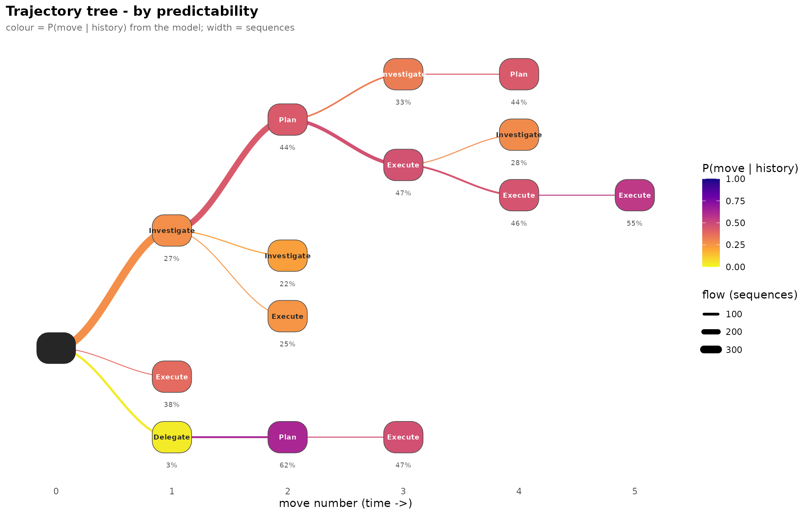

1. Getting started: basic analysis and trajectory trees
Source:vignettes/getting-started.Rmd
getting-started.Rmdtransitiontrees fits a variable-depth prediction
suffix tree to categorical sequence data and reports it as a
tidy, pathway-centric set of tables and plots. A fixed-order Markov
chain assumes memory is the same length everywhere; a
variable-order tree lets the data decide, per context, how much
history matters. This first vignette walks the core workflow
end to end and finishes with the two trajectory trees
that draw the sequences forward in time.
The other vignettes go further: Complete analysis case reads
one dataset all the way through, Ecosystem compatibility shows
the TraMineR / tna / Nestimate
hand-off, Advanced analysis covers tuning, bootstrapping and
comparison, and Visualization tours every plot.
1. Fit
context_tree() accepts a wide character matrix or
data.frame, a list of character vectors, a state-sequence
(stslist) object, or a long event log. We start with the
bundled trajectories matrix (138 learners x 15 time-steps,
three engagement states; trailing NAs mark dropouts).
data(trajectories)
dim(trajectories)
#> [1] 138 15
tree <- context_tree(trajectories, max_depth = 3L, min_count = 5L)
tree
#> <transitiontrees> 38 nodes, depth <= 3, 3 states [unpruned]
#> alphabet : Active, Average, Disengaged
#> fit on : 136 sequences, 1870 observations
#> smoothing: floor(ymin=0.001, rule=interpolate) min_count = 5
#> (start) n=1870 -> Average (0.43)
#> |-- Active n=658 -> Active (0.70)
#> | |-- Active n=433 -> Active (0.79)
#> | | |-- Active n=316 -> Active (0.84)
#> | | |-- Average n=70 -> Active (0.53)
#> | | `-- Disengaged n=15 -> Active (0.67)
#> | |-- Average n=144 -> Active (0.50)
#> | | |-- Active n=53 -> Average (0.55)
#> | | |-- Average n=66 -> Active (0.58)
#> | | `-- Disengaged n=12 -> Average (0.83)
#> | `-- Disengaged n=29 -> Active (0.52)
#> | |-- Active n=6 -> Active (0.83)
#> | |-- Average n=13 -> Active (0.54)
#> | `-- Disengaged n=9 -> Average (0.56)
#> |-- Average n=751 -> Average (0.61)
#> | |-- Active n=160 -> Average (0.52)
#> | | |-- Active n=74 -> Average (0.55)
#> | | |-- Average n=64 -> Active (0.45)
#> | | `-- Disengaged n=10 -> Average (0.50)
#> | |-- Average n=419 -> Average (0.68)
#> | | |-- Active n=80 -> Average (0.57)
#> | | |-- Average n=248 -> Average (0.72)
#> | | `-- Disengaged n=63 -> Average (0.65)
#> | `-- Disengaged n=122 -> Average (0.52)
#> | |-- Active n=7 -> Disengaged (0.57)
#> | |-- Average n=64 -> Disengaged (0.48)
#> ... 12 more nodes (use as.data.frame(x) or summary(x))max_depth caps how long a history (context) may be;
min_count is the minimum number of times a context must
occur to earn its own node.
A long event log is reshaped internally – just name the columns:
data(group_regulation_long)
head(group_regulation_long)
#> Actor Achiever Group Course Time Action
#> 1 1 High 1 A 2025-01-01 08:27:07 cohesion
#> 2 1 High 1 A 2025-01-01 08:35:20 consensus
#> 3 1 High 1 A 2025-01-01 08:42:18 discuss
#> 4 1 High 1 A 2025-01-01 08:50:00 synthesis
#> 5 1 High 1 A 2025-01-01 08:52:25 adapt
#> 6 1 High 1 A 2025-01-01 08:57:31 consensus
tree_long <- context_tree(group_regulation_long,
actor = "Actor", time = "Time", action = "Action",
max_depth = 2L, min_count = 5L)
n_nodes(tree_long)
#> [1] 872. Inspect the fit
summary(tree)
#> <transitiontrees summary> 38 nodes, depth <= 3, 3 states [unpruned]
#>
#> pathway depth count likely_next next_probability divergence
#> (start) 0 1870 Average 0.4347594 NA
#> Average 1 751 Average 0.6098535 0.11356246
#> Active 1 658 Active 0.6975684 0.34948716
#> Disengaged 1 325 Disengaged 0.4830769 0.40306556
#> Active -> Active 2 433 Active 0.7852194 0.02860157
#> Average -> Average 2 419 Average 0.6778043 0.01466796
#> Active -> Average 2 160 Average 0.5187500 0.12282588
#> Average -> Active 2 144 Active 0.5000000 0.14727560
#> Disengaged -> Disengaged 2 139 Disengaged 0.6762590 0.10977363
#> Average -> Disengaged 2 134 Average 0.5000000 0.04611817
#> changes_prediction
#> NA
#> FALSE
#> TRUE
#> TRUE
#> FALSE
#> FALSE
#> FALSE
#> FALSE
#> FALSE
#> TRUE
#> # ... 28 more rows (use as.data.frame(tree) for the full table)
model_fit(tree) # logLik, df, nobs, AIC, BIC, perplexity
#> logLik df nobs AIC BIC perplexity
#> 1 -1511.774 76 1870 3175.548 3596.109 2.244394Perplexity is the effective number of equally likely next states; it sits below the uniform baseline (the alphabet size, here 3) when history is informative.
3. The pathway tables
Every accessor returns a plain data.frame in one
canonical schema, so the views join cleanly. Pathways read left-to-right
oldest-to-newest (A -> B -> C); the root context is
shown as (start).
-
common_pathways:Returns the top n pathways by occurrence count – the trajectories the data actually contains many copies of. -
divergent_pathways: Returns the top n pathways by Kullback-Leibler divergence from their (k-1)-suffix. These are the pathways whose extended history adds the most predictive information over the shorter one. Pathways whose most likely next state actually flips between orders are marked in the changes_prediction column. -
sharp_pathways: Returns the top n pathways by predictive sharpness – the probability mass on their modal next state. High values indicate strongly deterministic continuations; low values indicate ambiguous next-state distributions.
common_pathways(tree, top = 6) # by frequency
#> pathway depth count likely_next next_probability divergence
#> 1 (start) 0 1870 Average 0.4347594 NA
#> 2 Average 1 751 Average 0.6098535 0.11356246
#> 3 Active 1 658 Active 0.6975684 0.34948716
#> 4 Active -> Active 2 433 Active 0.7852194 0.02860157
#> 5 Average -> Average 2 419 Average 0.6778043 0.01466796
#> 6 Disengaged 1 325 Disengaged 0.4830769 0.40306556
#> changes_prediction
#> 1 NA
#> 2 FALSE
#> 3 TRUE
#> 4 FALSE
#> 5 FALSE
#> 6 TRUE
divergent_pathways(tree, top = 6) # by divergence from the shorter history
#> pathway depth count likely_next next_probability
#> 1 Active -> Disengaged -> Active 3 6 Active 0.8318333
#> 2 Disengaged -> Active -> Average 3 10 Average 0.5000000
#> 3 Disengaged 1 325 Disengaged 0.4830769
#> 4 Disengaged -> Average -> Active 3 12 Average 0.8318333
#> 5 Active 1 658 Active 0.6975684
#> 6 Active -> Disengaged 2 23 Active 0.3913043
#> divergence changes_prediction
#> 1 0.6773610 FALSE
#> 2 0.5477701 FALSE
#> 3 0.4030656 TRUE
#> 4 0.3933342 TRUE
#> 5 0.3494872 TRUE
#> 6 0.3478095 TRUE
sharp_pathways(tree, top = 6) # by how peaked the next-state prediction is
#> pathway depth count likely_next next_probability
#> 1 Active -> Active -> Active 3 316 Active 0.8354430
#> 2 Disengaged -> Average -> Active 3 12 Average 0.8318333
#> 3 Active -> Disengaged -> Active 3 6 Active 0.8318333
#> 4 Active -> Active 2 433 Active 0.7852194
#> 5 Average -> Average -> Average 3 248 Average 0.7177419
#> 6 Disengaged -> Disengaged -> Average 3 31 Average 0.7085484
#> divergence changes_prediction
#> 1 0.011491875 FALSE
#> 2 0.393334181 TRUE
#> 3 0.677361037 FALSE
#> 4 0.028601567 FALSE
#> 5 0.006242261 FALSE
#> 6 0.198404690 FALSEchanges_prediction = TRUE flags a context whose single
most likely next state differs from its parent’s – the histories where
memory overturns the corpus-wide default. The lesson the tables teach
together: common is not the same as informative. The
most frequent pathways are the backbone of the corpus; the divergent
ones carry the insight.
4. Prune to the reliable tree
A context can survive fitting yet not earn its depth.
prune_tree() collapses contexts whose extra history is not
a significant gain over their parent (default: a likelihood-ratio
G-squared test).
pruned <- prune_tree(tree, criterion = "G2", alpha = 0.05)
pruned
#> <transitiontrees> 18 nodes, depth <= 3, 3 states [pruned]
#> alphabet : Active, Average, Disengaged
#> fit on : 136 sequences, 1870 observations
#> smoothing: floor(ymin=0.001, rule=interpolate) min_count = 5
#> pruned by: G2 alpha = 0.05
#> (start) n=1870 -> Average (0.43)
#> |-- Active n=658 -> Active (0.70)
#> | |-- Active n=433 -> Active (0.79)
#> | | `-- Average n=70 -> Active (0.53)
#> | `-- Average n=144 -> Active (0.50)
#> | `-- Disengaged n=12 -> Average (0.83)
#> |-- Average n=751 -> Average (0.61)
#> | |-- Active n=160 -> Average (0.52)
#> | | `-- Disengaged n=10 -> Average (0.50)
#> | |-- Average n=419 -> Average (0.68)
#> | | `-- Active n=80 -> Average (0.57)
#> | `-- Disengaged n=122 -> Average (0.52)
#> | `-- Disengaged n=31 -> Average (0.71)
#> `-- Disengaged n=325 -> Disengaged (0.48)
#> |-- Active n=23 -> Active (0.39)
#> |-- Average n=134 -> Average (0.50)
#> | `-- Active n=17 -> Active (0.41)
#> `-- Disengaged n=139 -> Disengaged (0.68)The pruned tree’s banner reports its node count and the criterion
used – compare it to the unpruned tree printed in section 1
to see how much the G-squared test removed.
5. Predict
predict(pruned, c("Active", "Active"), type = "class") # most likely next
#> [1] "Active"
round(predict(pruned, c("Active", "Active"), type = "prob"), 3) # full distribution
#> Active Average Disengaged
#> 0.785 0.194 0.021When an exact context is missing from the tree, prediction backs off to the longest matching suffix – the property that makes a variable-order model robust: it never refuses to predict, it just uses as much history as it has evidence for.
6. A first tree plot
Just plot() the tree. The default is a horizontal
layout: node size is the context count, the colour is the most-recent
state, and the predicted next state sits under each node.
plot(pruned)
plot() also takes style = "dendrogram",
"icicle", or "interactive" for the same tree
in other layouts – the Visualization vignette tours all
four.
7. Trajectory trees: where sequences go, and how predictably
The context tree reads backwards – a node is a suffix, the
most-recent state. The same sequences can be drawn forwards as
a trajectory tree: start at the left, every path is a
run of states unfolding in time. Forward trajectories are most
informative on a richer alphabet, so we switch to the bundled
ai_long log – one row per AI-prompting move (eight move
types: Execute, Investigate,
Plan, …), with a session id. context_tree()
reads it directly.
data(ai_long)
tree_ai <- context_tree(ai_long, actor = "project", session = "session_id",
action = "code", max_depth = 3L, min_count = 10L)
pruned_ai <- prune_tree(tree_ai)
tree_ai
#> <transitiontrees> 161 nodes, depth <= 3, 8 states [unpruned]
#> alphabet : Ask, Delegate, Execute, Explain, Investigate, Plan, Repair, Report
#> fit on : 428 sequences, 8551 observations
#> smoothing: floor(ymin=0.001, rule=interpolate) min_count = 10
#> (start) n=8551 -> Execute (0.38)
#> |-- Ask n=91 -> Explain (0.48)
#> | |-- Execute n=29 -> Execute (0.45)
#> | | `-- Execute n=13 -> Execute (0.54)
#> | |-- Investigate n=17 -> Explain (0.53)
#> | |-- Plan n=15 -> Explain (0.40)
#> | `-- Repair n=13 -> Explain (0.84)
#> |-- Delegate n=280 -> Plan (0.62)
#> | |-- Execute n=61 -> Plan (0.54)
#> | | |-- Execute n=22 -> Plan (0.50)
#> | | |-- Investigate n=13 -> Plan (0.54)
#> | | `-- Plan n=20 -> Plan (0.60)
#> | |-- Investigate n=35 -> Plan (0.57)
#> | | |-- Execute n=11 -> Plan (0.72)
#> | | `-- Plan n=10 -> Plan (0.50)
#> | |-- Plan n=68 -> Plan (0.67)
#> | | |-- Delegate n=16 -> Plan (0.62)
#> | | |-- Execute n=11 -> Plan (0.72)
#> | | `-- Investigate n=37 -> Plan (0.67)
#> | |-- Repair n=10 -> Execute (0.60)
#> | `-- Report n=10 -> Execute (0.40)
#> |-- Execute n=3090 -> Execute (0.51)
#> | |-- Ask n=21 -> Execute (0.57)
#> | | `-- Execute n=11 -> Execute (0.63)
#> | |-- Delegate n=46 -> Execute (0.41)
#> | | `-- Execute n=13 -> Execute (0.54)
#> ... 135 more nodes (use as.data.frame(x) or summary(x))plot_trajectories() draws the forward prefix tree and
colours the one tree two ways. These plots use ggforce (a
suggested package), so the chunks are guarded.
By frequency – how many sequences walk each path
plot_trajectories(tree_ai, measure = "frequency", min_count = 20L)
Node fill and edge width both scale to the number of sessions on each path, so the thick, dark branches are the prompting routines most projects actually follow – the corpus’s highways from the opening move outward.
By predictability – how confidently the model calls each step
plot_trajectories(pruned_ai, measure = "predictability", min_count = 20L)
Same nodes and edges, but each edge is now coloured by
P(state | history) from the model. Reading the two side by
side separates traffic from
predictability: an edge that is wide (frequency) but
pale (predictability) is a decision point – many sessions reach
it, but the next move is genuinely open. Those forks are where behaviour
is decided rather than executed.